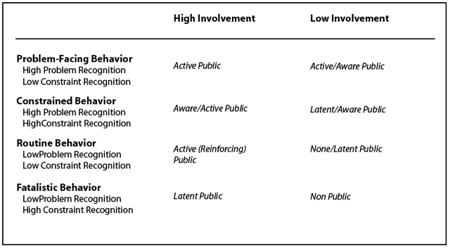
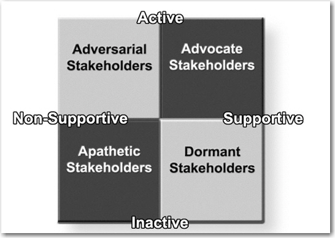

Grunig developed a situational theory of publics to explain and predict why some publics are active and others are passive. Within the stakeholder categories he notes that situational theory can identify which publics will “communicate actively, passively, or not at all about organizational decisions that affect them.”Grunig (2005), p. 779.
Those publics who do not face a problem are nonpublicsStakeholders who do not face a problem related to organizational decisions that affect them., those who face the problem but do not recognize it as a problem are latent publicsStakeholders who face a problem related to organizational decisions that affect them but who do not recognize it as a problem., those who recognize the problem are aware publicsStakeholders who recognize a problem related to organizational decisions that affect them., and those who do something about the problem are active publicsStakeholders who recognize and do something about a problem related to organizational decisions that affect them.. He identified three variables that explain why certain people become active in certain situations: level of involvement, problem recognition, and constraint recognition (see Figure 7.2 "Grunig’s Situational Theory of Publics").
Figure 7.2 Grunig’s Situational Theory of Publics
Source: Rawlins (2006) adapted and used with permission from Grunig.
Level of involvement is measured by the extent to which people connect themselves personally with the situation. However, people do not seek or process information unless they recognize the connection between them and a problem, which is the level of problem recognition. Whether people move beyond information processing to the information seeking behavior of active publics often depends on whether they think they can do something about the problem. Constraint recognitionThe level of personal efficacy a person believes that he or she holds, and the extent to which he or she is having an impact on the issue. is the level of personal efficacy a person believes that he or she holds, and the extent to which he or she is having an impact on the issue is possible. Those who think that nothing can be done have high constraint recognition and are less compelled to become active in the resolution of the problem. Another consideration, referent criteriaStandards of judgment that people apply to new situations based on previous experiences with the issue or the organization involved., is the guideline that people apply to new situations based on previous experiences with the issue or the organization involved.
Active publics are likely to have high levels of involvement and problem recognition, and lower levels of constraint recognition. Because they recognize how the problem affects them and they think they can do something about it, Grunig theorized that this public will actively seek information and act on that information. Aware publics will process information and might act, but are limited by lower levels of involvement and problem recognition, or higher levels of constraint recognition. Latent publics are not cognizant of how an issue involves them or don’t see it as a problem. They are simply not active on the issue. This public could become active or aware as information changes its cognitions about the issue.
Grunig tested the theory using problems that would create active and passive publics. He found four kinds of publics:
To summarize this step, active publics will have more priority over aware and inactive publics because their urgency is greater. Whether stakeholders will become active publics can be predicted by whether the problem involves them, whether they recognize the problem, and whether they think they can do anything about it.
One dimension missing from this model is whether the public is supportive or not. Each of these groups could be supportive or threatening, and stakeholder strategies would be contingent on the level of support. A comprehensive model of stakeholder prioritization should also identify whether active or aware publics are supportive or threatening.
Stakeholders who are also active publics become the obvious top priority publics. Although it would be convenient if active publics were always definitive stakeholders, human nature precludes this from happening in a constant and predictable way. Therefore, an organization must develop strategies to help mediate issues with priority publics. These strategies will depend on whether the stakeholders are supportive or nonsupportive and active or inactive. Therefore, you would develop strategies based on four groups, advocate stakeholders (active and supportive), dormant stakeholders (inactive and supportive), adversarial stakeholders (active and nonsupportive), and apathetic stakeholders (inactive and nonsupportive), as shown in Figure 7.3 "Stakeholder by Communication Strategy":
Figure 7.3 Stakeholder by Communication Strategy
Once strategies have been developed that address the stakeholders, there is one last prioritization step. According to Wilson, there are three types of publics involved in communication strategies: key publics, intervening publics, and influentials.Wilson (2005). Key publicsPublics whose participation and cooperation are required to accomplish organizational goals. Also known as priority publics. are those whose participation and cooperation are required to accomplish organizational goals. In relation to the first two steps, they are the stakeholders who have the highest priority according to their power/dependency/influence attributes, the urgency of the issue, and their level of active involvement in the issue. In Grunig’s model, the key publics are called priority publicsAnother term for key publics, these publics are those whose participation and cooperation are required to accomplish organizational goals. . To communicate effectively with these stakeholders, an organization must understand them as much as possible. Priority publics can be profiled by their demographics, lifestyles and values, media preferences, cooperative networks, and self-interests. Effective strategies appeal to the self-interests of the priority publics and reach them through the most appropriate channels (as discussed further in Chapter 9 "The Public Relations Process—RACE").
The intervening publicsPublics who act as opinion leaders, disseminating messages or information to others. pass information on to the priority publics and act as opinion leaders. Sometimes these publics, such as the media, are erroneously identified as priority publics. If an organization is satisfied when the message stops at a public, then it is a priority public. If the expectation is that the message will be disseminated to others, it is an intervening public. In most cases the media are intervening publics. Other influentials can be important intervening publics, such as doctors who pass information on to patients, and teachers who pass information on to students. The success of many campaigns is determined by the strength of relationships with intervening publics.
InfluentialsPublics who can act as intervening publics and whose opinions are more influential than public relations messages alone. These individuals can either support or work against an organization's efforts. can be intervening publics, but they also affect the success of public relations efforts in other ways. Influentials can either support an organization’s efforts or work against them. Members of some publics will turn to opinion leaders to verify or refute messages coming from organizations. The opinion of these personal sources is much more influential than the public relations messages alone. Therefore, successful campaigns must also consider how messages will be interpreted by influentials that act as either intervening or supporting publics.
In summary, stakeholders that become active publics and that can influence the success of an organization, or can appeal to the other stakeholders with that influence, should become priority publics for communication strategies. Publics that are critical to getting the information to the priority publics, such as the media, need to be recognized as intervening publics and critical to the success of the communication strategy. Influential groups or individuals may not be stakeholders in the organization, but may be important in shaping or framing the way the message is interpreted by the priority public, and therefore must be a part of the public relations professional’s communication strategy.